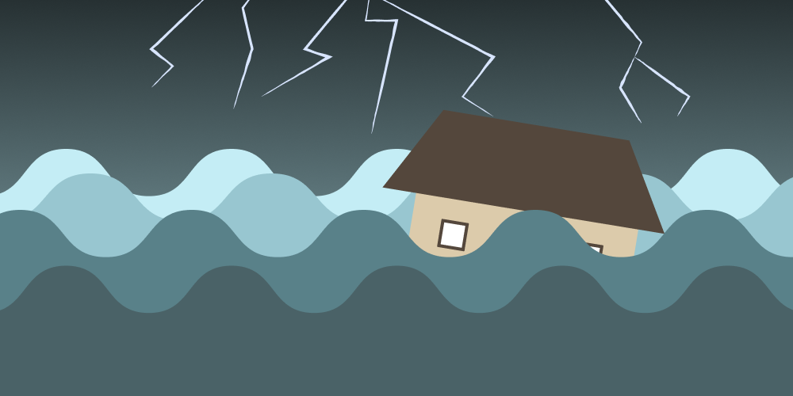
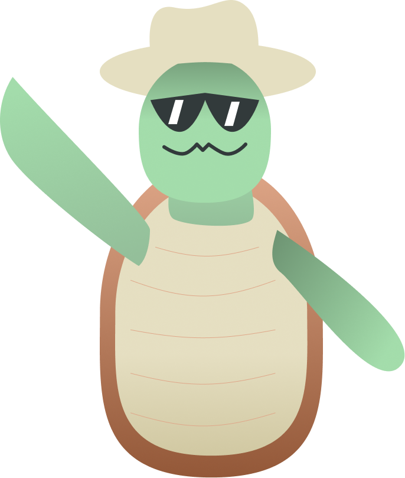
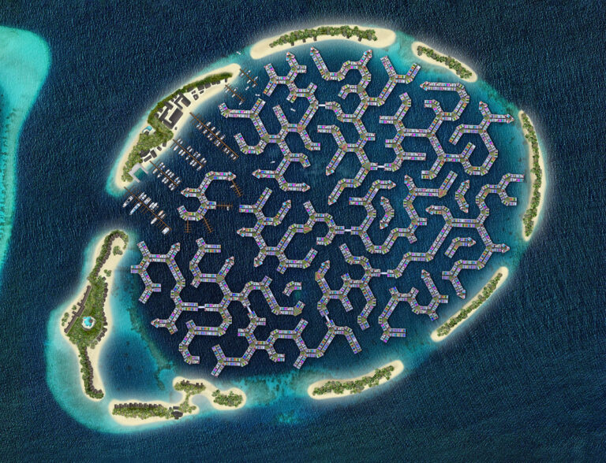
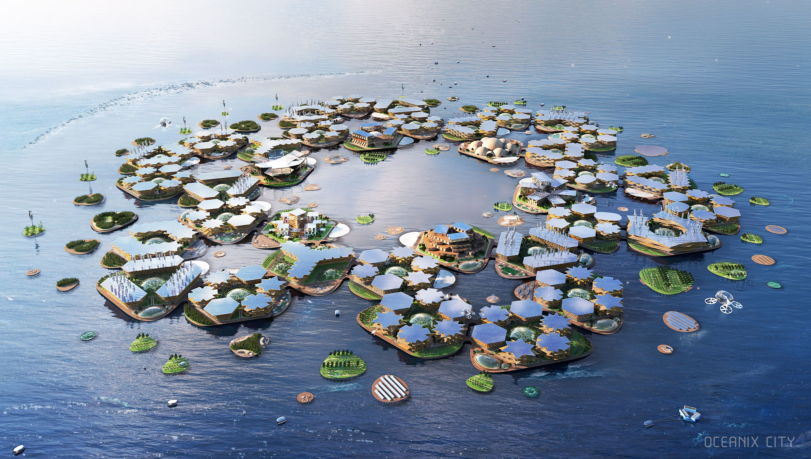

Maldives Floating City
Oceanix Busan
Dogen City

Since you were a child, living near the ocean meant the world to you.
But with rising sea tides and worsening weather, it's been risky to live near the ocean.
That's why the recent 'floating city' projects going up have caught your attention.

Hi, I'm Savvy the Sea Turtle! I'm here to help you choose a floating city to live in!
Maldives Floating City
Oceanix Busan
Dogen City

Hello, and welcome to Maldives Floating City! Thank you for coming all this way, allow me to give a brief introduction of the city and all its features.
The Maldives Floating City is located in a warm-water lagoon, just 10 minutes by boat from our capital city and its international airport.
As you can see, this city has a very unique design, with thousands of floating homes, and a structure of water canals and roads that was based on brain coral.
Designing the city after brain coral was part of our dedication to living with nature and respecting natural coral.
This community is a reflection of the Maldivian cultural lifestyle, which has always been connected to the sea.
That's all from me. Do you have any further questions about this city?
As you may have noticed, the city is surrounded on all sides by various “barrier islands” These islands act as breakers below the water, lowering the intensity of any waves.
We also plan to have artificial coral reefs growing underneath the city that will also act as a breaker. The urban grid the city is built on will also adapt to the changing environment.
Do you have any other questions?
The city is characterized as a boating city, with said boats moving through the city’s canals to reach different parts of the city.
Land-based movements are limited to walking, biking, and using noise-free buggies or scooters. Cars are not allowed in Maldives Floating City, unfortunately.
Do you have any other questions?
The Maldives Floating City has minimal impact on surrounding coral reefs, as it doesn’t require any land reclamation.
In addition, artificial coral banks are attached to the underside of the city, creating more coral reefs. In terms of energy usage, renewable energy is provided through the city’s smart grid
Do you have any other questions?
Thank you for visiting Maldives Floating City! We hope you choose to stay with us!

Greetings from South Korea, and welcome to Oceanix Busan! I’ll give an introduction on this city. Oceanix Busan is a resilient and sustainable floating community
Busan is a resilient and sustainable floating community. It is made up of various hexagonal floating platforms that are interconnected.
There are 3 types of platforms in Oceanix Busan: lodging platforms, research platforms, and living platforms
Currently it can hold up to 10,000 residents over 75 hectares, but with its modular design, it can expand its total area for more residents.
It is our answer to rising sea levels, and we hope that multiple versions of this city can be made.
Now that the introduction is finished, do you have any questions about this city?
The platform, made of durable materials such as concrete and steel, are designed to withstand wind, waves, and currents.
The platforms are also able to rise and fall as water levels fluctuate with adjustable tanks and floating foundations.
In the case of a severe storm, the whole city can be transported to a different location as well.
Do you have any other questions?
The city will use renewable energy from solar power, wind power, and hydroelectric power. The city aims to have net-zero energy use.
For food, fresh seafood is sourced from the city’s underwater bioreefs, and organic produce cultivated from high-tech greenhouses and hydroponic towers
The city also uses a closed-loop processing system, where waste is converted to energy, recycled materials, and feedstock for agriculture.
Do you have any other questions?
Our city strives to be fully sustainable, with net-zero energy and waste systems.
In addition, the city uses a special material called Biorock in its construction that adheres to the underside of the city platforms and can rebuild itself.
It protects steel from corroding, while protecting marine ecosystems from erosion and allowing them to regenerate.
Do you have any other questions?
Thank you for visiting Maldives Floating City! We hope you choose to stay with us!
under construction